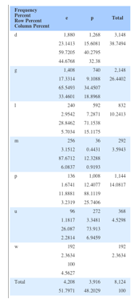
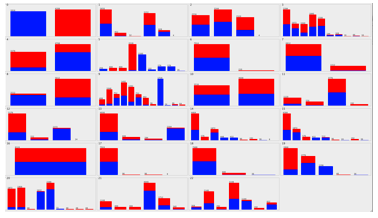
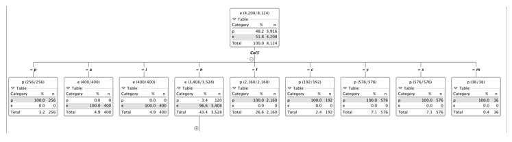

The purpose of this project was to analyze and truely understand the mushroom database. This database contained a plethora of attributes that would describe a specidifc mushroom. The name of the mushroom was not given. The pupose of this dataset was to show the data that relate to a mushroom being edible or not. Throughout the project, different questions tested the knownledge and the exploration of the database that was given.
For this question I automatically thought of a percentage, along with a standard deviation that would be useful to determine how spread out the data was. Nevertheless, due to the nature of the data, with all attributes being characters instead of letters, there was not many averages, that can be take. One approach that can be taken thought is recording the statistics of each individual row. I used the Value Counter in KNIME, for each individual attribute, to get some kind of distribution. The results didn’t look really helpful. The table to the right show the percentage of edible to poisonous plants there are, from column 0.
Then I tried to use the Crosstab tool to find the correlation between 2 different attributes. Even though this proved to be a little bit more helpful in giving some sort of meaning to the dataset, there would be too many tables if all crosstab tables are calculated. Either way the resulting value looked like the one to the left, when comparing attribute 0 to 22. I’ve come to the conclusion that with this specific stat, there really isn’t a way to completely summarize the dataset. The closest we can come is a percentage distribution of each of the attribute’s values. I decided to try WEKA, and found a cool visualization chart based on a values of one and the distribution of one of the classes in the other attributes. The char attached is a distribution of poisonous opposed to edible. Although this is a better way of visualizing the data, it doesn’t show associations between different attributes other than edible or poisonous.

The first thing I wanted to do was try to figure out if I can group the data into a certain number of groups. This lead me to K-Means. I tired with a group size of 2 hoping to get an good density of “e” and “p” respectfully. It didn’t work. I found that through the k-means tool in KNIME, the comparison between two different datasets is with the euclidean distance. Since these are characters, this would not offer any help. I decided to use the Decision Tree Learning tool instead. This was the right thing to do. The result is as follows:
As you can see, Col 5 is a great indicator of wether the plant is edible or poisonous, in all of it’s 9 attributes, except for 1. This leaves me to believe that there is some noise in the data set. Nevertheless after expanding the tree we find that column 20 is a great indicator to the remaining values that weren’t of complete confidence in the previous level. Due to the fact that groups can be devised from a decision tree learning algorithm we can find groups that will be precise from this method.
I moved over to WEKA, there I actually got the K-Means algorithm working but it did not prove to helpful because for every value of K that I tired, a consistent outcome for edible or poisonous didn’t come out. Even though I tried for multiple values of K, the different distributions did not prove any more helpful.
I guess I kind of answered when I tried to put the poisonous and edible values into groups. I used the classification algorithm that is a decision tree and found a good result based on col 5. The classification proved 100 percent confident throughout 2 levels. I did not try the classification through WEKA, but used the visualization aspect form that tool to confirm the findings that KNIME had.
My first thought was to find some values that do not fit the norm. I looked at the WEKA visualization further above to find any values in a certain class that are really not like all of the rest. Although there are some attributes that are dominated by one character, and the rest only have a few instances, I did not think those were anomalies. Then I tried to find anomalies that are in the relation to the edible and non-edible classification. There I found something. Out of the 5th attribute when the selection is “n” only 120 out of 3,528 are poisonous. I figured that this would be an anomaly because it sticks out of it’s classification. There are quite a few of these cases in the dataset, which are showed in the visualization located higher up. The 20th attribute shows a couple anomalies, as well as the 12th. Each have a character that is dominated either edible or poisonous and yet they have a few anomalies of other classification. Of course there are many other aspects to the anomalies. They can range out to man different dimensions and and values but for the purposes of finding relations between poisonous and edible plants I thought this would be the best way to find reasonable anomalies.
For this question, KNIME wasn’t too much help, I couldn’t find a good rule generation process that would help me. I turned to WEKA. I found the A-priori Association analysis, I altered the input line to allow 100 rules and let the program run. The confidence level was lowest .92. All of the 100 rules have generated. None of the first 100 actually helped with deciding if the mushroom was edible or not. Nevertheless, these rules might be helpful in finding some other important correlation. The rules that were generated are to the right.